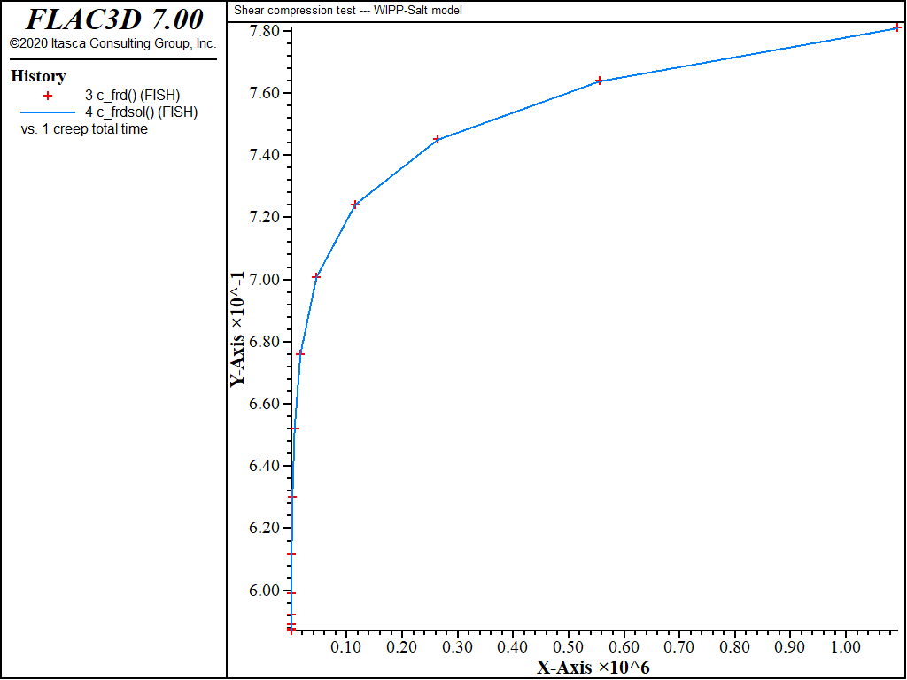
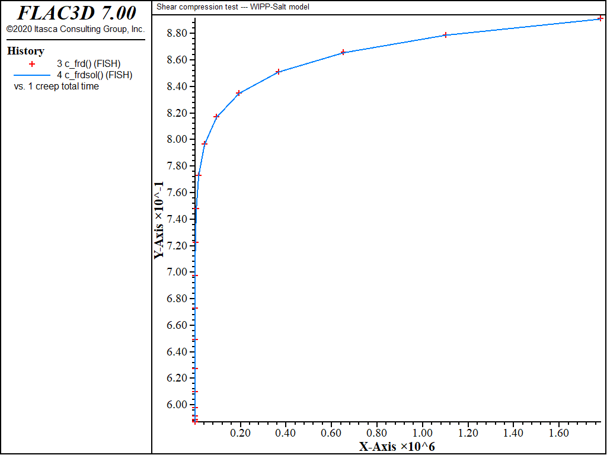
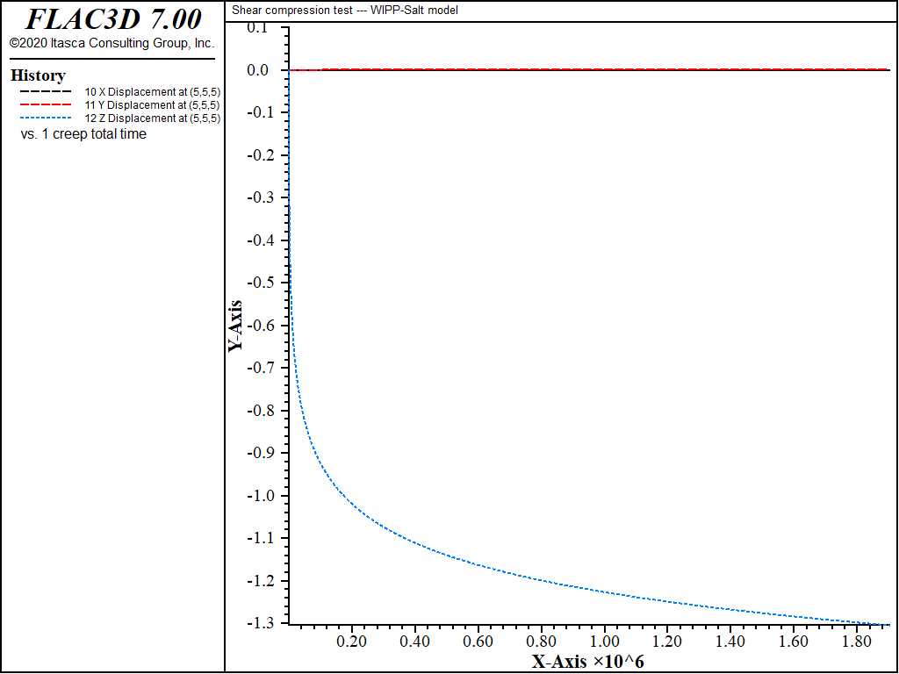
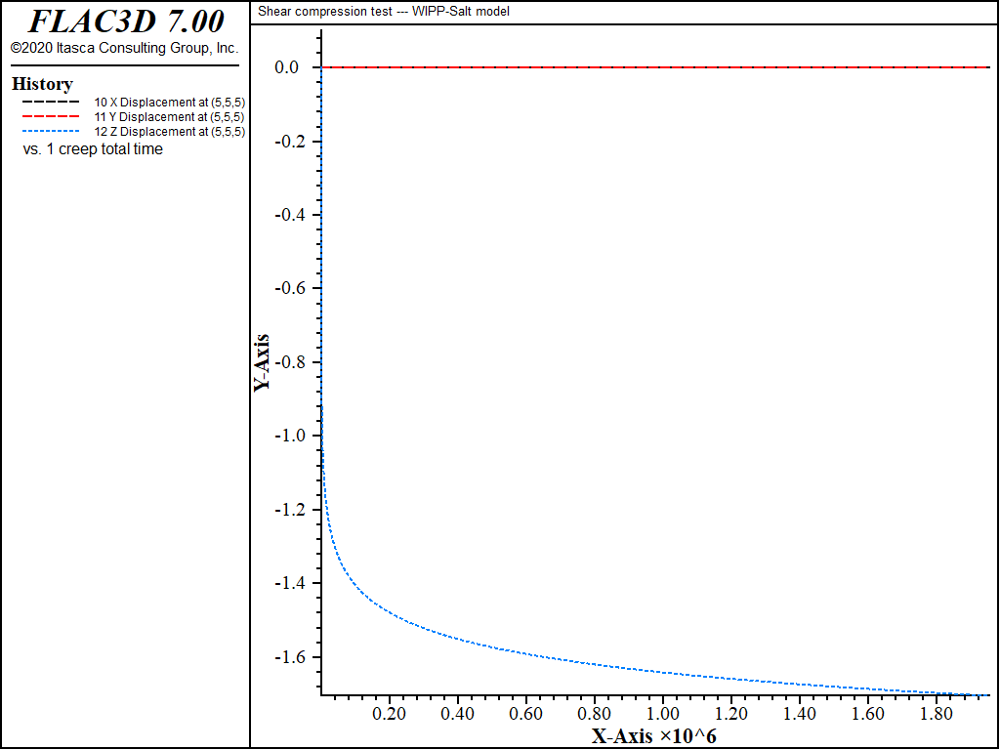

WIPP-Salt 模型：剪切压缩试验
注意
要在 FLAC3D 中查看此项目，请使用菜单命令 。 选择“Creep/ UnconfinedAndBiaxialCompressionWIPPSalt”并选择“UnconfinedAndBiaxialCompressionWIPPSalt.f3dprj”以加载。 该项目的主数据文件见本示例末尾（main data files）。
此处给出剪切压缩试验的结果，以验证 FLAC3D 中的 WIPP-Salt 模型（WIPP-Salt model）。该试验涉及一个初始处于弹性平衡状态的网格单元。 让该网格单元蠕变 23 天，在此期间监测相对密度 并与解析计算进行比较。
在剪切压缩试验中，轴向应力和围压均保持恒定。采用如下符号约定：\(\sigma_1\) 指最负（大）压应力， \(\sigma_3\) 指最不负（小）压应力，后者也是围压， 则应力不变量为
以及
此外，我们有
以及
对于恒定的施加应力，忽略蠕变分量，总应变率等于 压密应变率，于是可以利用 WIPP-Salt 模型（WIPP-Salt model）中关于 \(\dot\epsilon_{ij}^c\) 的公式 中的 \(\beta\) = 1，写出
其中 \(\dot\epsilon_v^c\) 在 WIPP-Salt 模型（WIPP-Salt model）中给出。
而对该试验，在模型的约束条件下预测不会发生侧向压密。
相对密度的解析表达式与静水压缩试验（hydrostatic compression test）中得到的结果类似。
进行两次试验：无侧限压缩试验和双轴压缩试验。 两次试验中 \(\sigma_1\) = -8.97 MPa。无侧限压缩试验中 \(\sigma_3\) = 0.0， 双轴压缩试验中 \(\sigma_3\) = -6.90 MPa。初始和最终密度以及剪切 模量和体积模量与静水压缩试验（hydrostatic compression test）中采用的相同。
无侧限压缩试验中相对密度的数值与解析值随蠕变时间的比较见 图 1（Figure 1）， 双轴压缩试验见 图 2（Figure 2）。 相对密度的误差小于 0.1%。无侧限压缩试验的轴向和侧向位移时程 示于 图 3（Figure 3）， 双轴压缩试验示于 图 4（Figure 4）。 如预期，这些试验中计算得到的侧向位移为零。


图 1：单轴压缩下相对密度的数值预测与解析预测的比较。


图 2：双轴压缩下相对密度的数值预测与解析预测的比较。


图 3：单轴压缩的轴向和侧向位移时程。


图 4：双轴压缩的轴向和侧向位移时程。
数据文件
;------------------------------------------------------------------
; 剪切压缩试验——WIPP-Salt 模型
;-------------------------------------------------------------------
model new
fish automatic-create off
model title "Shear compression test --- WIPP-Salt model"
model configure creep
; --- 几何形状 ---
zone create brick point 0 0 0 0 point 1 5 0 0 point 2 0 5 0 ...
point 3 0 0 5 size 1 1 1 ratio 1 1 1
; --- 参数 ---
zone initialize density 1350
program call 'parameter'
[cons]
; --- 本构模型 ---
zone cmodel assign wipp-salt
zone property bulk 0.1186e9 shear 0.0714e9 activation-energy 12000 ...
constant-a 4.56 constant-b 127 constant-d 5.79e-36 ...
creep-rate-critical 5.39e-8 exponent 4.9 temperature 300 ...
constant-gas 1.987 bulk-final [valbf] shear-final [valsf] ...
density-final [valrhof] compaction-0 [valb0] ...
compaction-1 [valb1] compaction-2 [valb2] density-salt [valrho]
; --- 历史 ---
model history creep time-total
model history timestep
fish history c_frd
fish history c_frdsol
fish history c_err
fish history c_ev
fish history c_evsol
fish history c_rbulk
zone history displacement-x position 5 5 0
zone history displacement-x position 5 5 5
zone history displacement-y position 5 5 5
zone history displacement-z position 5 5 5
; --- 试验设置
model large-strain on
model creep active on
model creep timestep starting 5.e-5
model creep timestep min 5.e-5 max 5e4
; --- 边界条件 ---
zone gridpoint fix velocity-x range position-x 0
zone gridpoint fix velocity-y range position-y 0
zone gridpoint fix velocity-z range position-z 0
zone face apply stress-zz [valsig1] range position-z 5
; --- 初始条件 ---
zone initialize stress-zz [valsig1]
model save 'ini'
; --- 单轴压缩试验 ---
[global valsig3=0.0] ; 单轴压缩
zone face apply stress-xx [valsig3] range position-x 5
zone face apply stress-yy [valsig3] range position-y 5
zone initialize stress-xx [valsig3]
zone initialize stress-yy [valsig3]
model solve time-total 2e6
model save 'uniaxial'
; --- 双轴压缩试验 ---
model restore 'ini'
[global valsig3 = -6.90e6] ; 双轴压缩
zone face apply stress-xx [valsig3] range position-x 5
zone face apply stress-yy [valsig3] range position-y 5
zone initialize stress-xx [valsig3]
zone initialize stress-yy [valsig3]
model solve time-total 2e6
model save 'biaxial'
;
⇐ WIPP-Salt Model: Hydrostatic Compression Test | Soft-Soil-Creep Model: Triaxial Consolidated Undrained Loading ⇒
| 这些内容对您有帮助吗？… | FLAC3D © 2019, Itasca | 原文更新于 2020 年 10 月 8 日 |